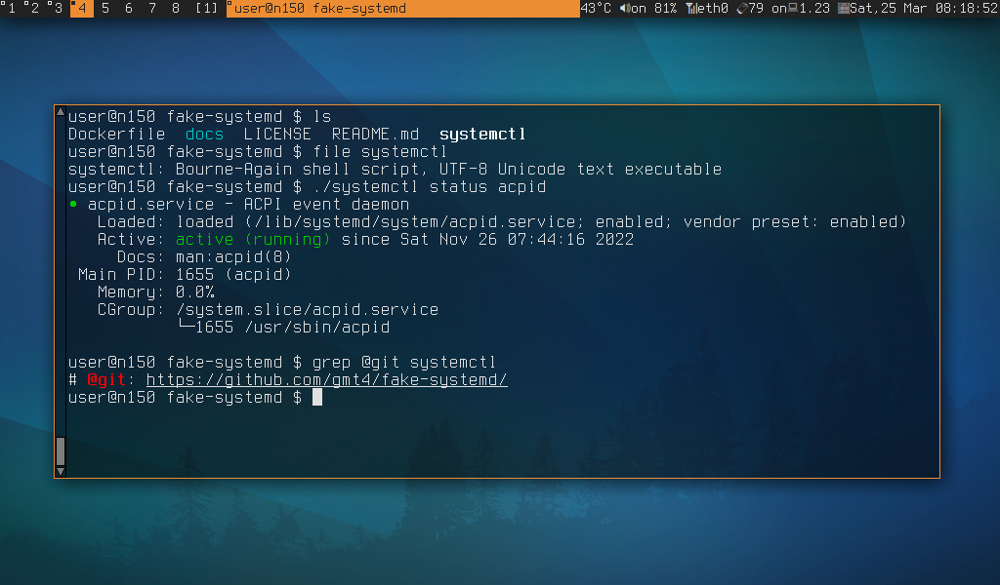

Not much here yet.
Head to the github repo:
https://github.com/gmt4/fake-systemd/
systemctl [OPTIONS...] {COMMAND} ...
systemctl (fake) # @version v1.0 (c) gmt4 https://github.com/gmt4/fake-systemd (forks kvaps/fake-systemd)
Query or send control commands to the systemd manager.
Options:
-h --help Show this help
-v --version Show this version.
Unit Commands:
start NAME... Start (activate) one or more units
stop NAME... Stop (deactivate) one or more units
restart NAME... Start or restart one or more units
is-active PATTERN... Check whether units are active
status [PATTERN...|PID...] Show runtime status of one or more units
list-units [UNITS...] List runtime status of one or more units
Unit File Commands:
enable NAME... Enable one or more unit files
disable NAME... Disable one or more unit files
is-enabled NAME... Check whether unit files are enabled
systemctl-fake: example screenshot
